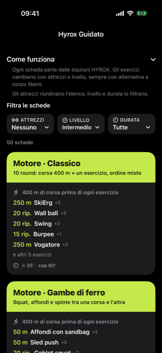
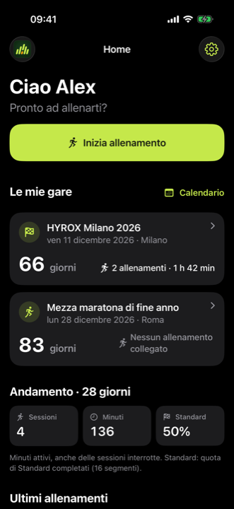
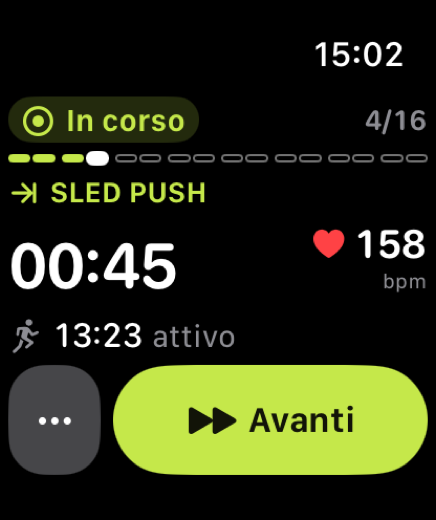
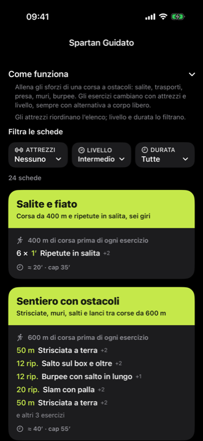
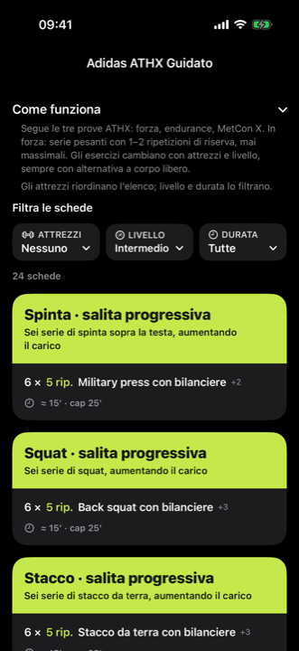
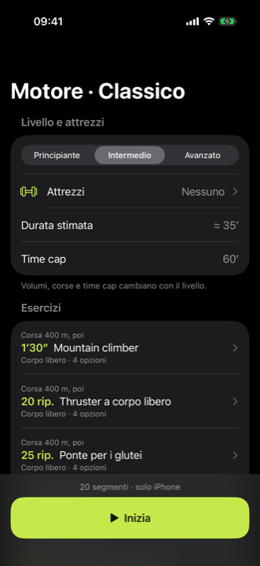
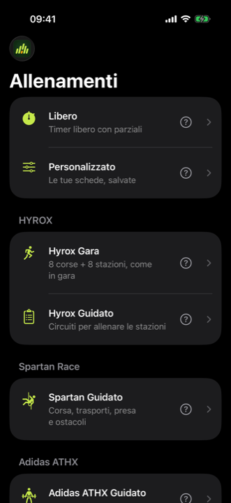
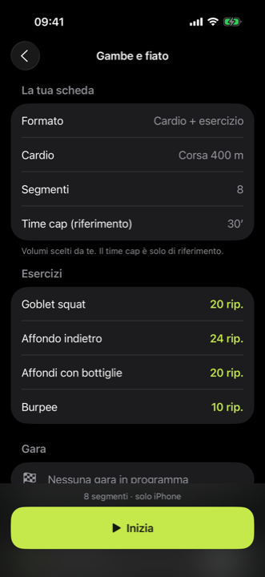
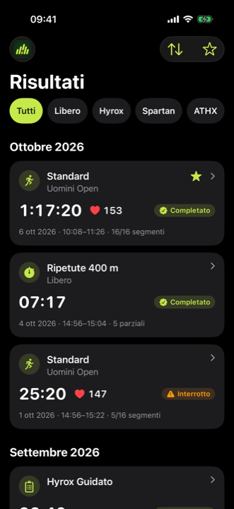

Libero
Timer libero con parziali. Cronometro a segmenti, manuale o automatico, con avvisi sonori.
Manuale o automaticoLibero, Personalizzato, Hyrox, Spartan e Adidas ATHX: schede guidate, cronometro a segmenti e Apple Watch. Gratis, senza account e anche offline.



Scegli come allenarti oggi. Stessa app, stessi riepiloghi, tutto nello stesso storico.
Timer libero con parziali. Cronometro a segmenti, manuale o automatico, con avvisi sonori.
Manuale o automaticoCrea le tue schede, con o senza corsa in mezzo, fino a 40 esercizi. Aggiungi anche i tuoi esercizi.
Salvate sul tuo iPhoneGara: 8 corse + 8 stazioni, come in gara. Guidato: 50 circuiti per allenare le stazioni.
Gara e Guidato24 circuiti di corsa, trasporti, presa e ostacoli.
Spartan Guidato24 circuiti di forza, endurance e MetCon X.
Adidas ATHX GuidatoOgni scheda parte dalle stazioni della disciplina. Tu scegli attrezzi, livello e durata: gli esercizi si adattano.





Componi un circuito con gli esercizi della libreria e con i tuoi, salvalo e riusalo quando vuoi.
Facoltativo: l’iPhone basta per tutto. Con l’Apple Watch passi al segmento successivo, metti in pausa e vedi i battiti senza prendere il telefono.

Filtra per Libero, Hyrox, Spartan, ATHX o Personalizzato. Tempi di ogni segmento, battiti, preferiti e il conto alla rovescia verso le tue gare.
Niente registrazione e niente login: apri l’app e ti alleni.
Allenamenti e schede restano sull’iPhone.
Allenati ovunque, anche senza rete.
Sì. Nessun abbonamento, nessun acquisto nell’app e nessun account.
No. L’iPhone basta per tutto; il Watch è facoltativo.
Sì. Allenamenti, schede e storico funzionano offline.
iPhone con iOS 17 o successivo. L’app per Apple Watch richiede watchOS 10.
Gara segue il percorso standard: 8 corse e 8 stazioni, con distanze e carichi per divisione. Guidato propone circuiti per allenare le stazioni, anche a casa.
Sul tuo dispositivo. Se vuoi, puoi esportare un allenamento in Salute: decidi tu.
Italiano e inglese. Scegli alla prima apertura.
Sì: consigli di attrezzi e accessori per ogni disciplina, con link ad Amazon.it. Nessun acquisto nell’app.
No. Ardenza è un’app indipendente. HYROX, Spartan Race e adidas ATHX sono marchi dei rispettivi titolari, usati qui solo per indicare i formati che puoi allenare.
Scarica Ardenza, scegli la lingua, rispondi a quattro domande e inizia.